Site Longdesc
Good and bad samples of implementation of the rules of the RGAA 3
Criterion 1.1 - Does each image have a text alternative?
Test 1.1.1 - Does each image (img tag) have an alt attribute?
Good samples
Image with empty alternative
Image with not empty alternative

Image with an alternative equal to src


Test 1.1.2 - Does each area (area tag) of an image map have an alt attribute?
Good samples
Area tag Image non clickable with empty alternative
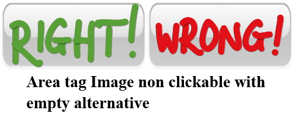Area tag Image non clickable with not empty alternative
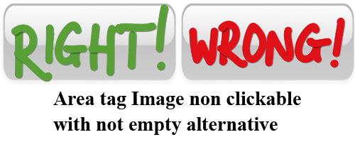Area tag Image clickable with not empty alternative

Bad samples
Area tag Image non clickable without alternative

Area tag Image clickable without alternative

Test 1.1.3 - Does each form button (input tag with the type="image" attribute) have an alt attribute?
Good samples
Input type image with alternative
Bad samples
Input type image without alternative
Test 1.1.4 - Does each clickable area (area tag) of a server-side image map have an equivalent link in the page?
Good samples
Area tag Image clickable of a server-side with link alternative
First alternative link
Second alternative link
Bad samples
Area tag Image clickable of a server-side without link alternative
Criterion 1.2 - For each decorative image with a text alternative, is this alternative empty?
Test 1.2.1 - Does each decorative image (img tag), without caption and with an alt attribute, meet the following conditions:
Good samples
Image with empty alternative
Image indentified as decorative (the "id" attribute has value "decorative-image") with empty alternative
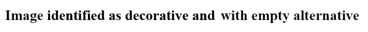Image indentified as decorative (the "class" attribute has value "decorative-image") with empty alternative
Image with empty alternative and a role="presentation" attribute
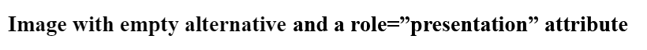Bad samples
Image with not empty alternative
Image indentified as decorative (the "id" attribute has value "decorative-image") with not empty alternative
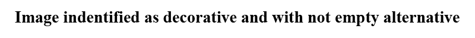Image with not empty alternative and a role="presentation" attribute

Image with empty alternative, but a not empty "title" attribute
Image with empty alternative, but a not empty "aria-label" attribute
Image with empty alternative, but a not empty "aria-describedby" attribute
Image with empty alternative, but a not empty "aria-labelledby" attribute
Not empty alternative
Test 1.2.2 - Does each non clickable area (area tag with no href attribute), not conveying any information, and with an alt attribute, meet the following conditions:
Good samples
Area tag Image non clickable with empty alternative
Area tag Image non clickable identified as decorative with empty alternative

Bad samples
Area tag Image non clickable identified as decorative with not empty alternative
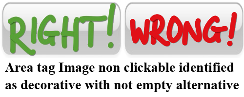Area tag Image non clickable identified as decorative with title attribute
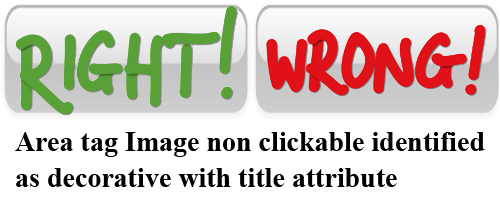Area tag Image non clickable identified as decorative with aria-label attribute
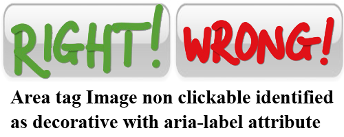Area tag Image non clickable identified as decorative with aria-labelledby attribute
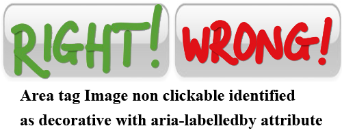Area tag Image non clickable identified as decorative with aria-describedby attribute
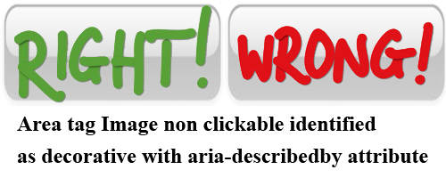Not empty alternative
Test 1.2.3 - For each image object without caption (object tag with the attribute type="image/"), not conveying any information, meet the following conditions:
Good samples
Image object
Image object identified as decorative
Bad samples
Image object identified as decorative and with some text between object tags
Image object identified as decorative and without "aria-hidden" attribute
Image object identified as decorative and with an aria-label attribute
Image object identified as decorative and with an aria-labelledby attribute
Image object identified as decorative and with an aria-describedby attribute
Image object identified as decorative and with an aria-describedby attribute in a child tag
Test 1.2.4 - Does each decorative vector image (svg tag), not conveying any information, meet the following conditions:
Good samples
SVG image
Empty SVG image identified as decorative
SVG image identified as decorative
SVG image identified as decorative and with an empty desc tag
SVG image identified as decorative and with an empty title tag
Bad samples
SVG image identified as decorative and without an aria-hidden attribute
SVG image identified as decorative and with an empty desc tag
SVG image identified as decorative and with an empty title tag
SVG image identified as decorative and with a title attribute
SVG image identified as decorative and with a title attribute on one child
SVG image identified as decorative and with an aria-label attribute
SVG image identified as decorative and with an aria-label attribute on one child
SVG image identified as decorative and with an aria-labelledby attribute
SVG image identified as decorative and with an aria-labelledby attribute on one child
SVG image identified as decorative and with an aria-describedby attribute
SVG image identified as decorative and with an aria-describedby attribute on one child
Test 1.2.5 - Chaque image bitmap (balise canvas) de décoration, sans légende, vérifie-t-elle ces conditions ?
Good samples
Image canvas
Image canvas identified as decorative
Bad samples
Image canvas identified as decorative and with some text between canvas tags
Image canvas identified as decorative and without "aria-hidden" attribute
Image canvas identified as decorative and with an aria-label attribute
Image canvas identified as decorative and with an aria-labelledby attribute
Image canvas identified as decorative and with an aria-describedby attribute
Image canvas identified as decorative and with an aria-describedby attribute in a child tag
Test 1.2.6 - Chaque image embarquée (balise embed avec l’attribut type="image/…") de décoration, sans légende, vérifie-t-elle ces conditions ?
Good samples
Image embed
Image embed identified as decorative
Bad samples
Image embed identified as decorative and without "aria-hidden" attribute
Image embed identified as decorative and with an aria-label attribute
Image embed identified as decorative and with an aria-labelledby attribute
Image embed identified as decorative and with an aria-describedby attribute
Image embed identified as decorative and with an aria-describedby attribute in a child tag
Criterion 1.3 - Pour chaque image porteuse d’information ayant une alternative textuelle, cette alternative est-elle pertinente (hors cas particuliers) ?
Test 1.3.1 - Chaque image (balise img) porteuse d’information, ayant un attribut alt, vérifie-t-elle ces conditions (hors cas particuliers) ?
Good samples
Image with not empty alternative
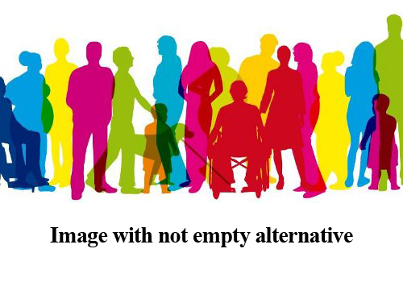Image identified as informative with not empty alternative

Image identified as informative with a title attribute equal to the alt attribute

Image identified as informative with an aria-label attribute equal to the alt attribute

Image identified as informative with an aria-labelledby attribute that text associated is equal to the alt attribute
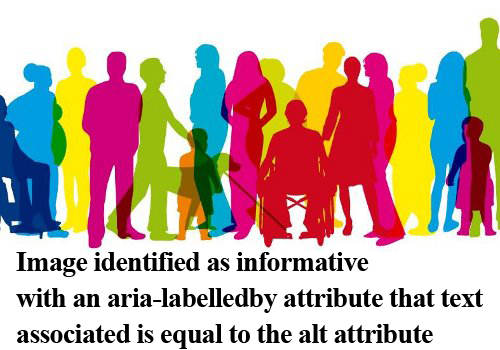 Not empty altImage in figure and caption with an aria-labelledby attribute that text associated is equal to the alt attribute

Bad samples
Image identified as informative with empty alternative

Image identified as informative with a title attribute differente to the alt attribute

Image identified as informative with an aria-label attribute differente to the alt attribute
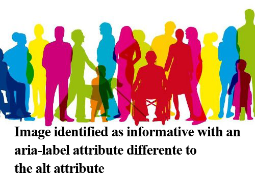Image identified as informative with an aria-labelledby attribute that text associated is differente to the alt attribute
 a other text
a other text
Image in figure and caption with an aria-labelledby attribute that text associated is differente to the alt attribute
SVG with marker informative
Criterion 5.1 -
| Ce tableau de mise en page pose des | problèmes quand il est linéarisé. |
| Le contenu n'est donc pas cohérent | pour certains utilisateurs. |
| ville | lundi | mardi | mercredi | jeudi | vendredi |
|---|---|---|---|---|---|
| paris | 10c° | 8c° | 10c° | 12c° | 10c° |
| toulouse | 13c° | 11c° | 12c° | 14c° | 12c° |
| strasbourg | 7c° | 5c° | 6c° | 8c° | 7c° |
| ville | lundi | mardi | mercredi | jeudi | vendredi |
|---|---|---|---|---|---|
| paris | 10c° | 8c° | 10c° | 12c° | 10c° |
| toulouse | 13c° | 11c° | 12c° | 14c° | 12c° |
| strasbourg | 7c° | 5c° | 6c° | 8c° | 7c° |
Criterion 8.2 - For each web page, is the source code valid according to the specified document type (except in particular cases)?
Test 8.2.1 - For each document type declaration, does the page source code meet the following conditions (except in particular cases)?
Good samples
The following link provides access to a page that respects the W3C standard and an other link to the W3C evaluation of this page :
The page that respects the W3C standard and W3C validator of this pageBad samples
The following link provides access to the W3C evaluation of this page :
W3C validator of this pageTest 8.2.2 - For each document type declaration, the page source code must not contain obsolete elements. Has this rule been followed (except in particular cases)?
Good samples
The following link provides access to a page that has no obsolete element :
The page that has no obsolete element and W3C validator of this pageBad samples
The following link provides access to a page that has obsolete elements :
The page that has no obsolete element and W3C validator of this pageCriterion 8.10 - On each web page, are changes in reading direction identified?
Test 8.10.1 - On each web page, does each text for which the reading direction is different from the default reading direction meet the following conditions:
Good samples
يا ظالمني غناء أُم كلثوم - تأليف أحمد رامي
وقلبي من رضاك محروم يا ظالمني يا هجرني
تحيرني وتضنيني تلوعني وتكويني
وتغضب لما أقولك يوم ولما أشكي تخاصمني
يا ظالمني
وتنسى كل ما جرى لي حرام تهجر وتتجنى
يصادف يوم وتصفى لي وأقضي العمر أتمنى
وقاسيت الضنى في بعدك صبرت سنين على صدك
Bad samples without information
يا ظالمني غناء أُم كلثوم - تأليف أحمد رامي
وقلبي من رضاك محروم يا ظالمني يا هجرني
تحيرني وتضنيني تلوعني وتكويني
وتغضب لما أقولك يوم ولما أشكي تخاصمني
يا ظالمني
وتنسى كل ما جرى لي حرام تهجر وتتجنى
يصادف يوم وتصفى لي وأقضي العمر أتمنى
وقاسيت الضنى في بعدك صبرت سنين على صدك
Test 8.10.2 - On each Web page, does each change reading direction (dir attribute) meet the following conditions:
Good samples
يا ظالمني غناء أُم كلثوم - تأليف أحمد رامي
وقلبي من رضاك محروم يا ظالمني يا هجرني
تحيرني وتضنيني تلوعني وتكويني
وتغضب لما أقولك يوم ولما أشكي تخاصمني
يا ظالمني
وتنسى كل ما جرى لي حرام تهجر وتتجنى
يصادف يوم وتصفى لي وأقضي العمر أتمنى
وقاسيت الضنى في بعدك صبرت سنين على صدك
Bad samples with a "dir" attribute whose value is "auto"
يا ظالمني غناء أُم كلثوم - تأليف أحمد رامي
وقلبي من رضاك محروم يا ظالمني يا هجرني
تحيرني وتضنيني تلوعني وتكويني
وتغضب لما أقولك يوم ولما أشكي تخاصمني
يا ظالمني
وتنسى كل ما جرى لي حرام تهجر وتتجنى
يصادف يوم وتصفى لي وأقضي العمر أتمنى
وقاسيت الضنى في بعدك صبرت سنين على صدك
Bad samples with a "dir" attribute whose value is different from that expected
يا ظالمني غناء أُم كلثوم - تأليف أحمد رامي
وقلبي من رضاك محروم يا ظالمني يا هجرني
تحيرني وتضنيني تلوعني وتكويني
وتغضب لما أقولك يوم ولما أشكي تخاصمني
يا ظالمني
وتنسى كل ما جرى لي حرام تهجر وتتجنى
يصادف يوم وتصفى لي وأقضي العمر أتمنى
وقاسيت الضنى في بعدك صبرت سنين على صدك
Support of the criterion 8.10 by assistive technologies
| Jaws 18 | NVDA 2016 | |
|---|---|---|
| IE 11 | Supporté | Non supporté |
| Jaws 18 | NVDA 2016 | |
|---|---|---|
| IE 11 | Supporté | Non supporté |
Criterion 10.4 - On each web page, is text still readable when character size is increased until at least 200%?
Test 10.4.1 - In the style sheets of the website, non relative units (pt, pc, mm, cm, in) must not be used for the media types screen, tv, handheld, projection. Has this rule been followed?
Good samples
Paragraph with relative units %
Paragraph with relative units em
Paragraph with relative units % - tag style
Paragraph with relative units em - tag style
Paragraph with relative units %
Paragraph with relative units em
Bad samples
Paragraph with non relative units px
Paragraph with non relative units pt
Paragraph with non relative units pc
Paragraph with non relative units mm
Paragraph with non relative units cm
Paragraph with non relative units im
Paragraph with non relative units px - tag style
Paragraph with non relative units pt - tag style
Paragraph with non relative units pc - tag style
Paragraph with non relative units mm - tag style
Paragraph with non relative units cm - tag style
Paragraph with non relative units im - tag style
Paragraph with non relative units px
Paragraph with non relative units pt
Paragraph with non relative units pc
Paragraph with non relative units mm
Paragraph with non relative units cm
Paragraph with non relative units im
Test 10.4.2 - In the style sheets of the website, for the media types screen, tv, handheld, projection, do font sizes use relative units only?
Good samples
Paragraph with % fontsize - extern CSS
Paragraph with em fontsize - extern CSS
Paragraph with % fontsize - tag style
Paragraph with em fontsize - tag style
Paragraph with % fontsize - attr style
Paragraph with em fontsize - attr style
Bad samples
Paragraph with px fontsize - extern CSS
Paragraph with px fontsize - tag style
Paragraph with px fontsize - attr style
Criterion 10.5 -
Test
Test
Text red and backgroud - red attr style
Text red and backgroud red - extern CSS
Criterion 10.7 - On each web page, is the focus visible for each element that receives focus?
Test 10.7.1 - For each element receiving focus, the browser default visual cue must not be removed (CSS property outline, outline-color, outline-width, outline-style). Has this rule been followed?
Criterion 10.9 -
text justify - extern CSS
text justify - tag style
texte justify - attr style
Criterion 10.13 - For each web page, are hidden texts rendered properly by assistive technologies?
Test 10.13.1 - On each web page, does each hidden text meet one of the following conditions?
Good samples
Show the hidden text
Some hidden text
A link hidden off screen that can show on focus :
A other hidden text that can be show with a button that inform the user by the "aria-expanded" and "aria-controls" attributes :
Show the hidden text
Other some hidden text
Bad samples
The following text is hidden with the property "display:none;" :
Some hidden text
The following text is hidden with the property "visibility:hidden;" :
Some hidden text
The following hidden text can be show, but the design pattern aria is not used correctly : Afficher Some hidden text
The following text is showing, but the users that use assistive technologies can not read it: Some hidden text
The following text is hidding off screen, the users that use assistive technologies can read it, but not the others: Some hidden text
The following input has a label correctly associated with it, but anybody can read it :
Criterion 11.1 - Does each form field have a label?
Test 11.1.1 - Does each form field meet one of the following conditions?
Good samples
The form field has a title attribute:
The label (label tag) is associated with the form field:
The form field has an aria-label property:
The form field has an aria-labelledby property that references an identified chunk of text:
Bad samples
The form field has no title, aria-label, aria-labelled attribure:
The form field has an empty title attribute:
The label is associating with a non-existing field:
The form field has an aria-labelledby property that references a non-existing chunk of text:
Test 11.1.2 - Does each form field that is associated with a label (label tag), meet the following conditions:
Good samples
The form field has an id attribute, which is unique and matches the value of a for attribute of a label :
Bad samples
The id of the form field isn't unique:
Test 11.1.3 - Does each form field associated with a label, via the ARIA aria-labelledby property, meet the following conditions?
Good samples
The following input has a label associated with it by the "aria-labelledby" attribute :
Some hidden label
The following input has labels associated with it by the "aria-labelledby" attribute :
Some
hidden label
The following input has a label associated with it by the "aria-labelledby" attribute and show on focus :
Some hidden label
Bad samples
The following input has a label associated with it by the "aria-labelledby" attribute, but two contains have the same "id":
Some hidden label
The following input has labels associated with it by the "aria-labelledby" attribute. Some part of the label not has an "id" attribute :
Some
hidden label
The following input has a label associated with it by the "aria-labelledby" attribute, but only the user use an assistive technology can read it :
Some hidden label
Test 11.1.4 - Does each form field that uses a property ARIA aria-label must be accompanied by a visible text passage and attached to the field to understand the nature of the expected input. Does this rule is respected?
Good samples
The following input has a label with the "aria-label" attribute and has a text passage just behind :
Some label
Bad samples
The following input has a label with the "aria-label" attribute, but it has not a text passage just behind :
Test 11.1.5 - Does each form field that uses a title attribute, meet the following conditions:
Good samples
The following input has a label with the "title" attribute and has no "placeholder" attribute :
The following input has a label with the "title" attribute and its "placeholder" attribute is equal to the "title" attribute :
Bad samples
The following input has a label with the "title" attribute and its "placeholder" attribute is not equal to the "title" attribute :
Criterion 11.5 - In each form, is the information of same nature grouped together, if necessary?
Test 11.5.1 - In each form, is the information of same nature grouped together via a fieldset tag, if necessary?
Good samples
Bad samples
Criterion 11.9 - In each form, is the text of each button relevant?
Test 11.9.1 - In each form, does the text of each button meet one of the following conditions?
Good samples
Bad samples
Test 11.9.2 - In each form, does the text of each button implemented via an ARIA property aria-labelledby meet the following conditions?
Good samples
Bad samples
Criterion 11.10 - In each form, is the input control used in a relevant way?
Test 11.10.1 - For each form, do mandatory fields indications meet one of the following conditions?
Good samples
Bad samples
Test 11.10.2 - Each mandatory field indication based on the ARIA properties aria-label, aria-required, or the "required" attribute, must have an explicit visual cue in its label (label tag) or in a chunk of text tied to the form field via the ARIA property aria-describedby or aria-labelledby. Has this rule been followed?
Good samples
Bad samples
Test 11.10.3 - Does each mandatory field indication provided via a chunk of text tied by an ARIA property aria-describedby or aria-labelledby meet the following conditions?
Good samples
Bad samples
Test 11.10.10 - Does each form field that uses a title attribute as input help, meet the following conditions:
Good samples
The following input has a label with the "title" attribute and has no "placeholder" attribute :
The following input has a label with the "title" attribute and its "placeholder" attribute is equal to the "title" attribute :
Bad samples
The following input has a label with the "title" attribute and its "placeholder" attribute is not equal to the "title" attribute :